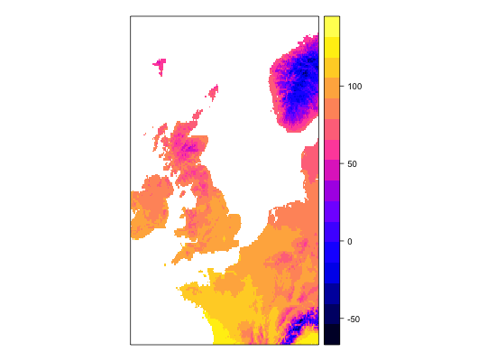
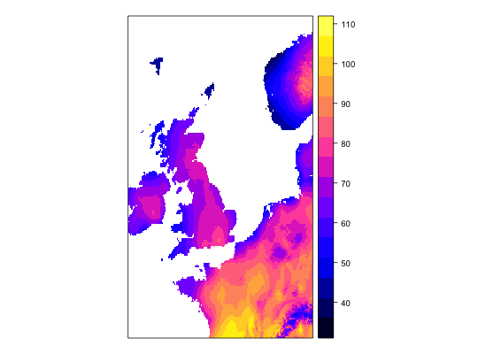
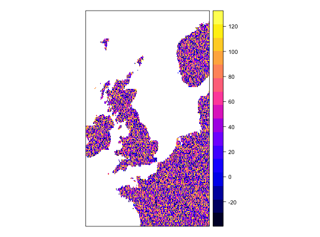
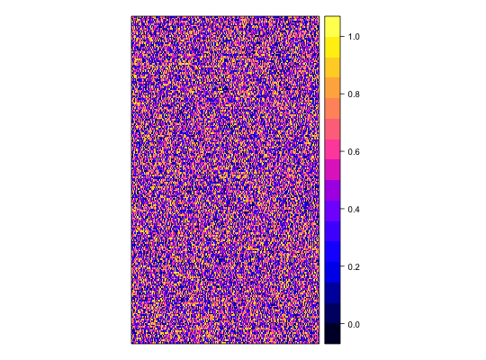

Process module: AddRandomUniformPredictors
Process module which adds a random uniform covariate to the dataset. This new covariate can be scaled to an existing covariate.
AddRandomUniformPredictors(.data, name = "RandUnif", scaleTo = NULL)
Arguments
- .data
- Internal parameter, do not use in the workflow function.
.datais a list of a data frame and a raster object returned from occurrence modules and covariate modules respectively..datais passed automatically in workflow from the occurrence and covariate modules to the process module(s) and should not be passed by the user. - name
- Optional argument specifying the name of the new covariate layer. If not specified, it will automatically named.
- scaleTo
- Optional argument specifying the name of an existing covariate layer which the new random uniform covariate will be scaled to.
Value
a Raster object with the appended random uniform covariate.
Version
1.01
Date submitted
2016-06-15
Data type
presence-only, presence/absence, abundance, proportion
See also
Other process: BackgroundAndCrossvalid,
Background, Bootstrap,
Clean, Crossvalidate,
JitterOccurrence, MESSMask,
NoProcess,
OneHundredBackground,
OneThousandBackground,
PartitionDisc,
StandardiseCov,
TargetGroupBackground,
Transform, addInteraction
Examples
work1 <- workflow(occurrence = UKAnophelesPlumbeus, covariate = UKBioclim, process = Chain(OneHundredBackground, AddRandomUniformPredictors(scaleTo = 'bio1',name = 'Random.bio1'), AddRandomUniformPredictors(scaleTo = 'bio2'), AddRandomUniformPredictors), model = LogisticRegression, output = PerformanceMeasures)Warning message: Some extracted covariate values are NA. This may cause issues for some modelsWarning message: You have no cross-validation folds, validation statistics may be misleadingWarning message: prediction from a rank-deficient fit may be misleadingWarning message: 286 data points removed due to missing data### Dsiplay resulting covariate maps from each workflow spplot(work1$process.output[[1]]$ras$bio1)spplot(work1$process.output[[1]]$ras$bio2)spplot(work1$process.output[[1]]$ras$Random.bio1.1)spplot(work1$process.output[[1]]$ras$RandUnif.1)spplot(work1$process.output[[1]]$ras$RandUnif.2)### Show resulting model work1$model.output[[1]]$model$model#> #> Call: glm(formula = .df$value ~ ., family = "binomial", data = covs) #> #> Coefficients: #> (Intercept) bio1 bio2 bio3 bio4 #> -1.342427 -0.534995 -0.472520 0.392092 -0.036863 #> bio5 bio6 bio7 bio8 bio9 #> 0.356548 -0.391765 NA 0.023554 -0.046062 #> bio10 bio11 bio12 bio13 bio14 #> 1.279061 -0.648244 -0.064661 -0.212880 0.248887 #> bio15 bio16 bio17 bio18 bio19 #> -0.027247 0.223968 0.155035 -0.074517 -0.038476 #> Random.bio1.1 RandUnif.1 RandUnif.2 #> 0.007922 0.020959 0.040233 #> #> Degrees of Freedom: 285 Total (i.e. Null); 264 Residual #> Null Deviance: 370.2 #> Residual Deviance: 159.2 AIC: 203.2 #>